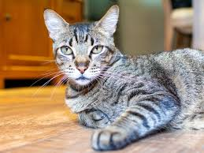

Mittens
Espécie: Gato
Tamanho: M
Idade: 2 anos
Sexo: Macho
Estado de saúde: Excelente
Descrição: Mittens é um gato carinhoso, adora um bom carinho e se adapta bem a diferentes ambientes. Ideal para quem procura um pet tranquilo.
Adotar Mittens